9.5 Real Distribution Families
本节中记录的 distribution object 构造函数为最大可能的参数域返回唯一定义的分布。 这通常意味着它们返回的分布比它们的数学对应物所定义的域更大。
> (pdf (normal-dist 1 0) 1) +inf.0
> (pdf (normal-dist 1 0) 1.0000001) 0.0
一些参数的边界值会产生非唯一的极限。 有时,这种模糊性可以用必要的属性来解决;例子见 Gamma-Dist 。 当不存在解决方法时,如 (beta-dist 0 0), 它把一个不确定的概率放在 0 值上, 其余的放在 1 上,构造函数返回一个 undefined distribution 。
一些分布对象构造函数在给定特殊值(如 +inf.0 )作为参数时试图返回合理的分布。 先不要指望这些。
许多分布系列,如 Gamma-Dist, 可以在规模或速率(这是规模的倒数)上进行参数化。 在所有这些情况下,由 math/distributions 提供的实现都是以比例为参数的。
9.5.1 贝塔分布
Wikipedia: Beta Distribution.
syntax
procedure
alpha : Real beta : Real
procedure
(beta-dist-alpha d) → Flonum
d : Beta-Dist
procedure
(beta-dist-beta d) → Flonum
d : Beta-Dist
> (plot (for/list ([α (in-list '(1 2 3 1/2))] [β (in-list '(1 3 1 1/2))] [i (in-naturals)]) (function (distribution-pdf (beta-dist α β)) #:color i #:label (format "Beta(~a,~a)" α β))) #:x-min 0 #:x-max 1 #:y-max 4 #:y-label "density") 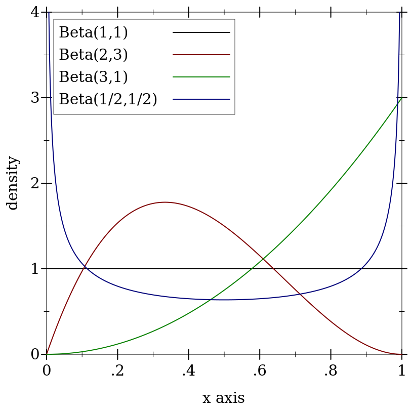
> (plot (for/list ([α (in-list '(1 2 3 1/2))] [β (in-list '(1 3 1 1/2))] [i (in-naturals)]) (function (ordered-dist-cdf (beta-dist α β)) #:color i #:label (format "Beta(~a,~a)" α β))) #:x-min 0 #:x-max 1 #:y-label "probability") 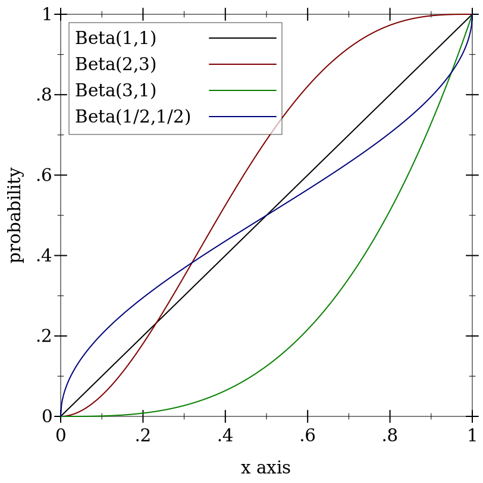
(beta-dist 0 0) 和 (beta-dist +inf.0 +inf.0) 是 undefined distributions 。
当 a = 0 或 b = +inf.0 时,返回的分布就像 (delta-dist 0) 。
当 a = +inf.0 或 b = 0 时,返回的分布就像 (delta-dist 1) 。
9.5.2 Cauchy 分布
Wikipedia: Cauchy Distribution.
syntax
procedure
(cauchy-dist [mode scale]) → Cauchy-Dist
mode : Real = 0 scale : Real = 1
procedure
(cauchy-dist-mode d) → Flonum
d : Cauchy-Dist
procedure
(cauchy-dist-scale d) → Flonum
d : Cauchy-Dist
> (plot (for/list ([m (in-list '(0 -1 0 2))] [s (in-list '(1 1/2 2.25 0.7))] [i (in-naturals)]) (function (distribution-pdf (cauchy-dist m s)) #:color i #:label (format "Cauchy(~a,~a)" m s))) #:x-min -8 #:x-max 8 #:y-label "density" #:legend-anchor 'top-right) 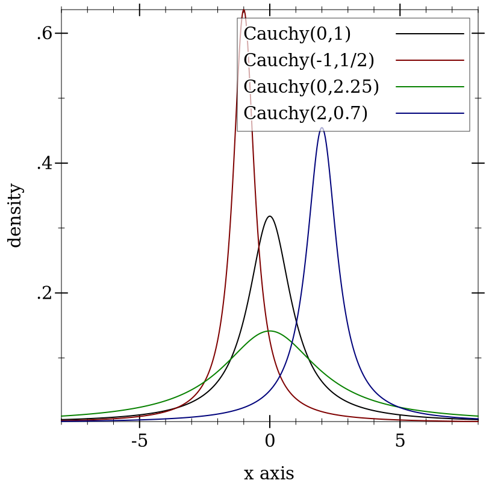
> (plot (for/list ([m (in-list '(0 -1 0 2))] [s (in-list '(1 1/2 2.25 0.7))] [i (in-naturals)]) (function (ordered-dist-cdf (cauchy-dist m s)) #:color i #:label (format "Cauchy(~a,~a)" m s))) #:x-min -8 #:x-max 8 #:y-label "probability") 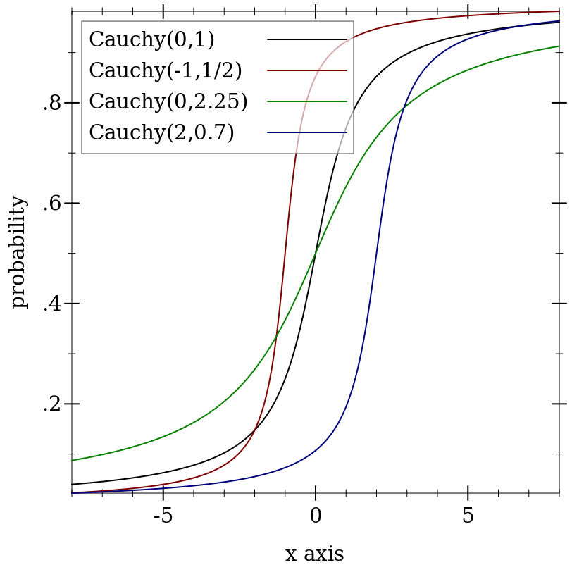
9.5.3 德尔塔分布
Wikipedia: Dirac Delta Function.
syntax
procedure
(delta-dist [mean]) → Delta-Dist
mean : Real = 0
procedure
(delta-dist-mean d) → Flonum
d : Delta-Dist
> (pdf (delta-dist) 0) +inf.0
> (pdf (delta-dist) 1) 0.0
> (plot (for/list ([μ (in-list '(-1 0 1))] [i (in-naturals)]) (function (ordered-dist-cdf (delta-dist μ)) #:color i #:style i #:label (format "δ(~a)" μ))) #:x-min -2 #:x-max 2 #:y-label "probability") 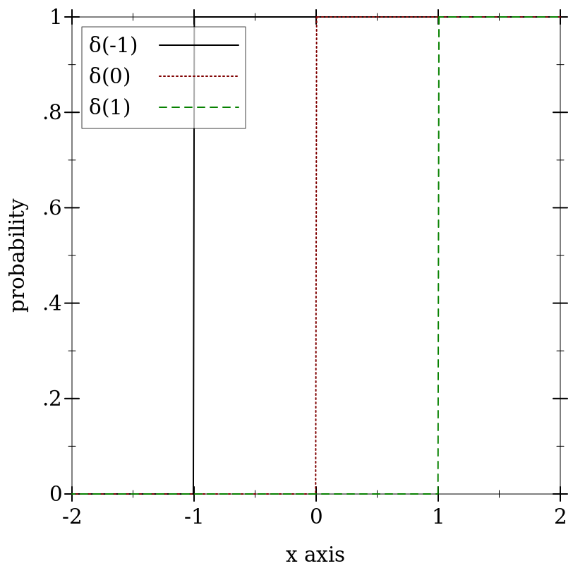
9.5.4 指数分布
Wikipedia: Exponential Distribution.
syntax
procedure
(exponential-dist [mean]) → Exponential-Dist
mean : Real = 1
procedure
(exponential-dist-mean d) → Flonum
d : Exponential-Dist
(exponential-dist (/ 1.0 rate))
> (plot (for/list ([μ (in-list '(2/3 1 2))] [i (in-naturals)]) (function (distribution-pdf (exponential-dist μ)) #:color i #:label (format "Exponential(~a)" μ))) #:x-min 0 #:x-max 5 #:y-label "density" #:legend-anchor 'top-right) 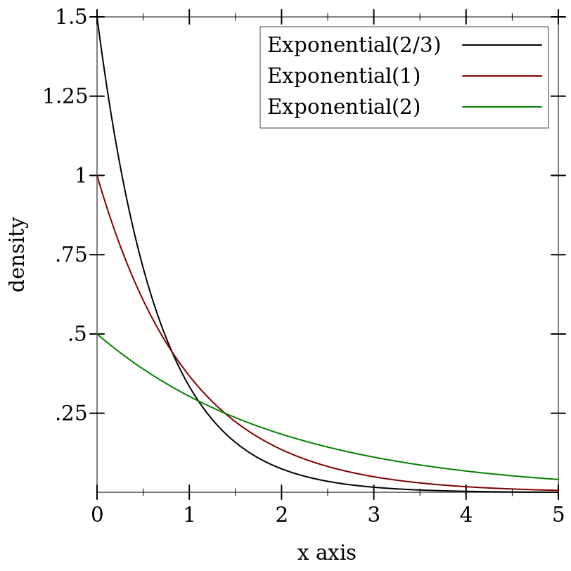
> (plot (for/list ([μ (in-list '(2/3 1 2))] [i (in-naturals)]) (function (ordered-dist-cdf (exponential-dist μ)) #:color i #:label (format "Exponential(~a)" μ))) #:x-min 0 #:x-max 5 #:y-label "probability" #:legend-anchor 'bottom-right) 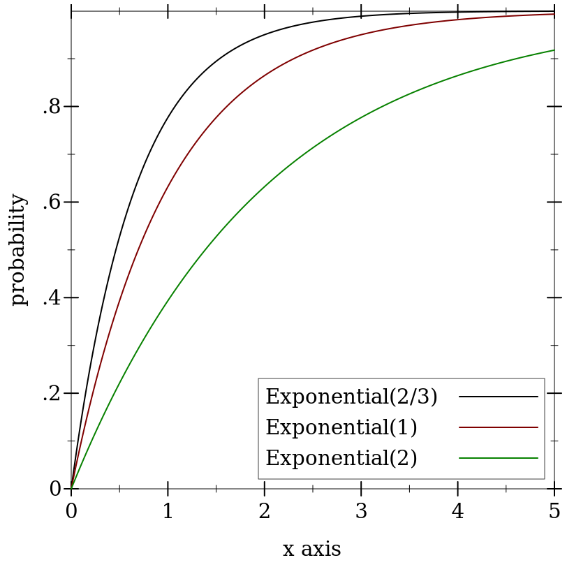
9.5.5 伽马分布
Wikipedia: Gamma Distribution.
syntax
procedure
(gamma-dist [shape scale]) → Gamma-Dist
shape : Real = 1 scale : Real = 1
procedure
(gamma-dist-shape d) → Flonum
d : Gamma-Dist
procedure
(gamma-dist-scale d) → Flonum
d : Gamma-Dist
(gamma-dist shape (/ 1.0 rate))
> (plot (for/list ([k (in-list '(1 2 3 9))] [s (in-list '(2 2 3 1/2))] [i (in-naturals)]) (function (distribution-pdf (gamma-dist k s)) #:color i #:label (format "Gamma(~a,~a)" k s))) #:x-min 0 #:x-max 15 #:y-label "density" #:legend-anchor 'top-right) 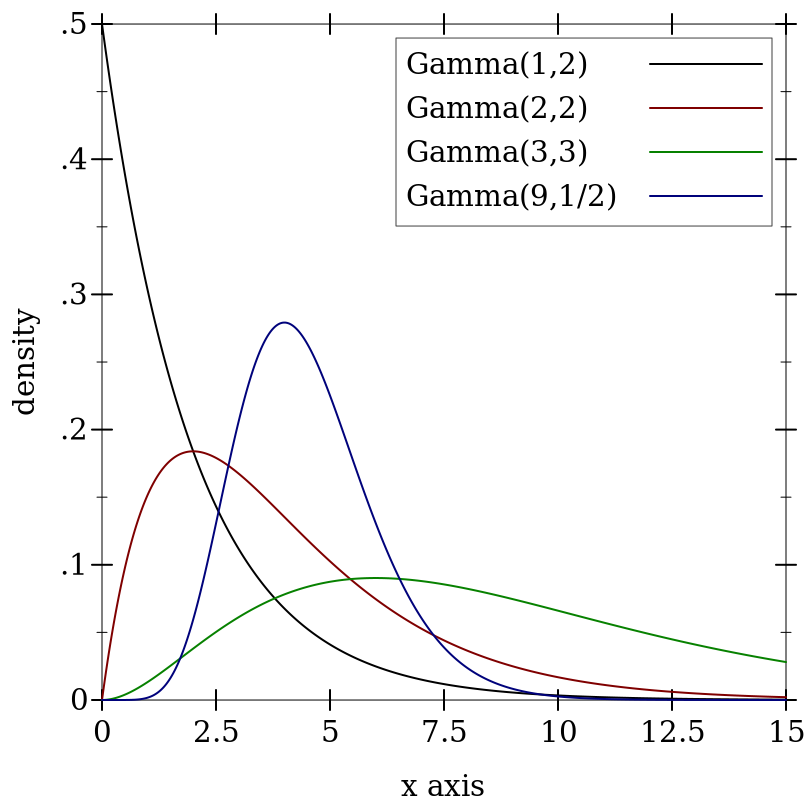
> (plot (for/list ([k (in-list '(1 2 3 9))] [s (in-list '(2 2 3 1/2))] [i (in-naturals)]) (function (ordered-dist-cdf (gamma-dist k s)) #:color i #:label (format "Gamma(~a,~a)" k s))) #:x-min 0 #:x-max 15 #:y-label "probability" #:legend-anchor 'bottom-right) 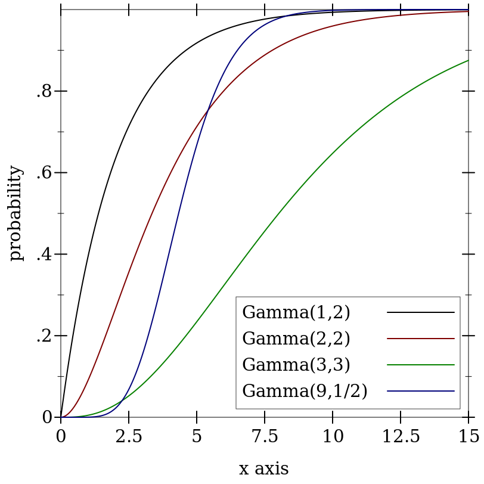
> (cdf (gamma-dist 0 1) 0) 1.0
9.5.6 Logistic 分布
Wikipedia: Logistic Distribution.
syntax
procedure
(logistic-dist [mean scale]) → Logistic-Dist
mean : Real = 0 scale : Real = 1
procedure
(logistic-dist-mean d) → Flonum
d : Logistic-Dist
procedure
(logistic-dist-scale d) → Flonum
d : Logistic-Dist
> (plot (for/list ([μ (in-list '(0 -1 0 2))] [s (in-list '(1 1/2 2.25 0.7))] [i (in-naturals)]) (function (distribution-pdf (logistic-dist μ s)) #:color i #:label (format "Logistic(~a,~a)" μ s))) #:x-min -8 #:x-max 8 #:y-label "density" #:legend-anchor 'top-right) 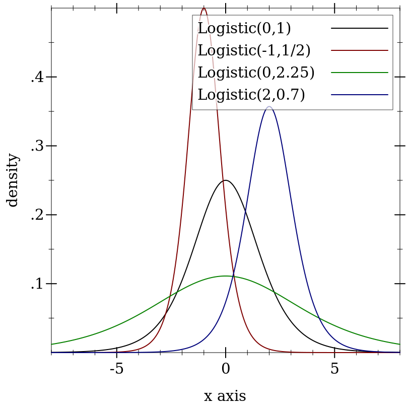
> (plot (for/list ([μ (in-list '(0 -1 0 2))] [s (in-list '(1 1/2 2.25 0.7))] [i (in-naturals)]) (function (ordered-dist-cdf (logistic-dist μ s)) #:color i #:label (format "Logistic(~a,~a)" μ s))) #:x-min -8 #:x-max 8 #:y-label "probability") 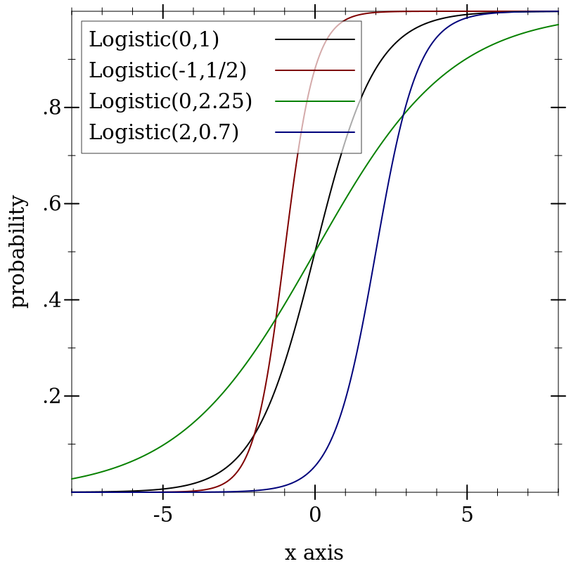
9.5.7 正态分布
Wikipedia: Normal Distribution.
syntax
procedure
(normal-dist [mean stddev]) → Normal-Dist
mean : Real = 0 stddev : Real = 1
procedure
(normal-dist-mean d) → Flonum
d : Normal-Dist
procedure
(normal-dist-stddev d) → Flonum
d : Normal-Dist
(normal-dist mean (sqrt var))
> (plot (for/list ([μ (in-list '(0 -1 0 2))] [σ (in-list '(1 1/2 2.25 0.7))] [i (in-naturals)]) (function (distribution-pdf (normal-dist μ σ)) #:color i #:label (format "N(~a,~a)" μ σ))) #:x-min -5 #:x-max 5 #:y-label "density") 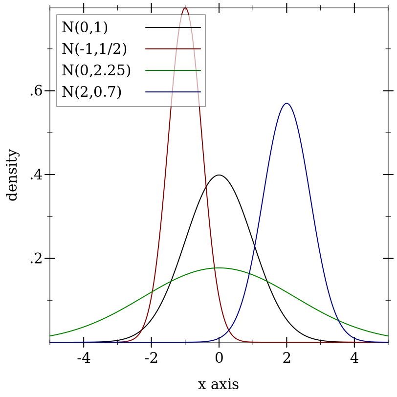
> (plot (for/list ([μ (in-list '(0 -1 0 2))] [σ (in-list '(1 1/2 2.25 0.7))] [i (in-naturals)]) (function (ordered-dist-cdf (normal-dist μ σ)) #:color i #:label (format "N(~a,~a)" μ σ))) #:x-min -5 #:x-max 5 #:y-label "probability") 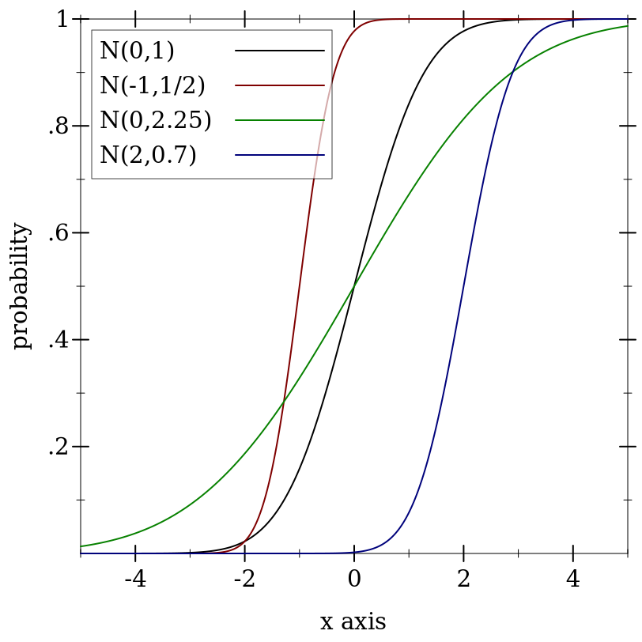
9.5.8 三角形分布
Wikipedia: Triangular Distribution.
syntax
procedure
(triangle-dist [min max mode]) → Triangle-Dist
min : Real = 0 max : Real = 1 mode : Real = (* 0.5 (+ min max))
procedure
(triangle-dist-min d) → Flonum
d : Triangle-Dist
procedure
(triangle-dist-max d) → Flonum
d : Triangle-Dist
procedure
(triangle-dist-mode d) → Flonum
d : Triangle-Dist
如果 min, mode 和 max 不按升序排列,则在构造分布对象之前对它们进行排序。
> (plot (for/list ([a (in-list '(-3 -1 -2))] [b (in-list '(0 1 3))] [m (in-list '(-2 0 2))] [i (in-naturals)]) (function (distribution-pdf (triangle-dist a b m)) #:color i #:label (format "Triangle(~a,~a,~a)" a b m))) #:x-min -3.5 #:x-max 3.5 #:y-label "density") 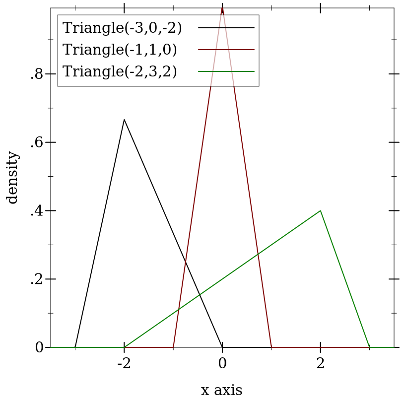
> (plot (for/list ([a (in-list '(-3 -1 -2))] [b (in-list '(0 1 3))] [m (in-list '(-2 0 2))] [i (in-naturals)]) (function (ordered-dist-cdf (triangle-dist a b m)) #:color i #:label (format "Triangle(~a,~a,~a)" a b m))) #:x-min -3.5 #:x-max 3.5 #:y-label "probability") 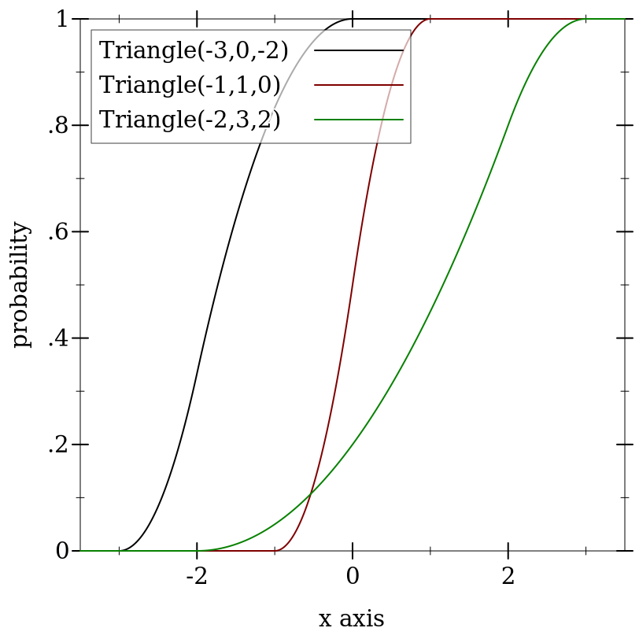
(triangle-dist c c c) 对任何实数 c 的行为就像一个以 c 为中心的支持有限的 delta 分布。
9.5.9 截断分布
syntax
procedure
(truncated-dist d) → Truncated-Dist
d : Real-Dist (truncated-dist d max) → Truncated-Dist d : Real-Dist max : Real (truncated-dist d min max) → Truncated-Dist d : Real-Dist min : Real max : Real
procedure
t : Truncated-Dist
procedure
(truncated-dist-min t) → Flonum
t : Truncated-Dist
procedure
(truncated-dist-max t) → Flonum
t : Truncated-Dist
(truncated-dist d) 等同于 (truncated-dist d -inf.0 +inf.0) 。 (truncated-dist d max) 等同于 (truncated-dist d -inf.0 max) 。 如果 min > max, 在构造分布对象之前,它们会被交换。
通过将截断分布的 inverse cdf 应用于均匀样本来获取样本。
> (define d (normal-dist)) > (define t (truncated-dist d -2 1)) > t (truncated-dist (normal-dist 0.0 1.0) -2.0 1.0)
> (plot (list (function (distribution-pdf d) #:label "N(0,1)" #:color 0) (function (distribution-pdf t) #:label "T(N(0,1),-2,1)")) #:x-min -3.5 #:x-max 3.5 #:y-label "density") 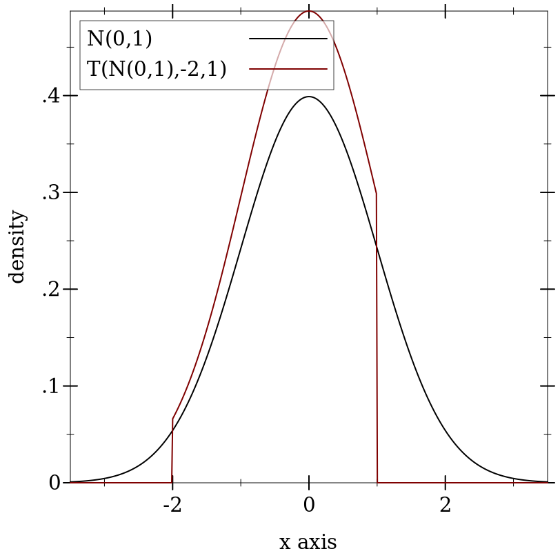
> (plot (list (function (ordered-dist-cdf d) #:label "N(0,1)" #:color 0) (function (ordered-dist-cdf t) #:label "T(N(0,1),-2,1)")) #:x-min -3.5 #:x-max 3.5 #:y-label "probability") 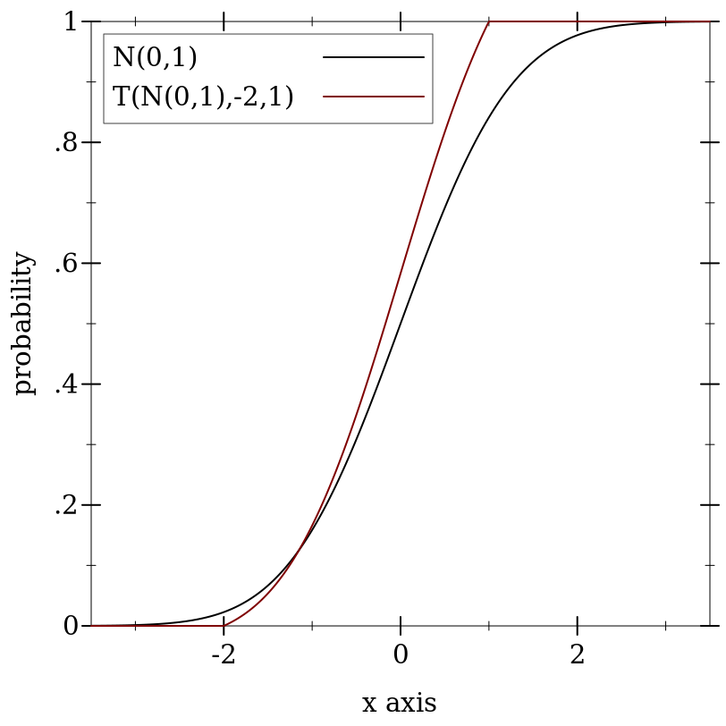
9.5.10 均匀分布
Wikipedia: Uniform Distribution.
syntax
procedure
(uniform-dist max) → Uniform-Dist max : Real (uniform-dist min max) → Uniform-Dist min : Real max : Real
procedure
(uniform-dist-min d) → Flonum
d : Uniform-Dist
procedure
(uniform-dist-max d) → Flonum
d : Uniform-Dist
(uniform-dist) 等同于 (uniform-dist 0 1) 。 (uniform-dist max) 等同于 (uniform-dist 0 max) 。 如果 max < min,则在构造分布对象之前将它们互换。
> (plot (for/list ([a (in-list '(-3 -1 -2))] [b (in-list '(0 1 3))] [i (in-naturals)]) (function (distribution-pdf (uniform-dist a b)) #:color i #:label (format "Uniform(~a,~a)" a b))) #:x-min -3.5 #:x-max 3.5 #:y-label "density") 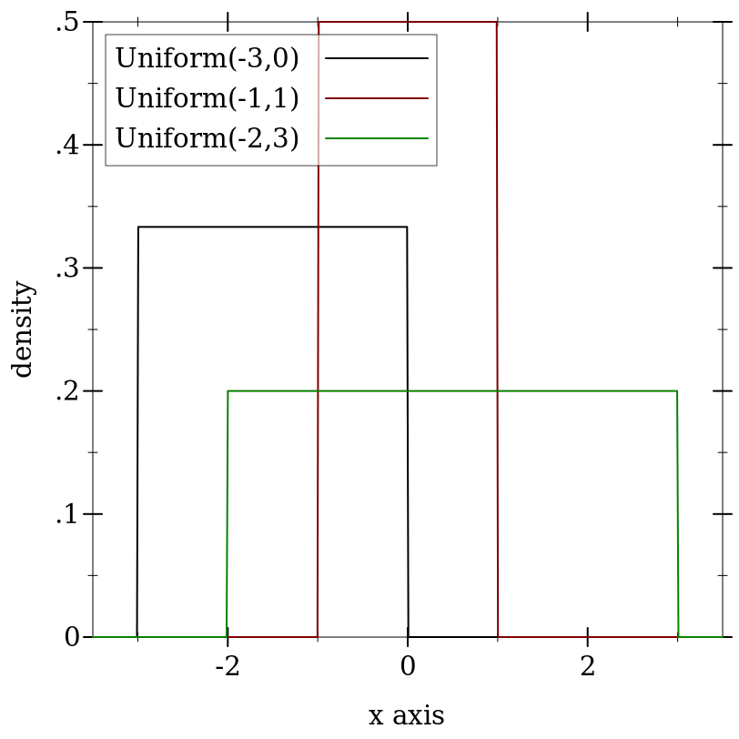
> (plot (for/list ([a (in-list '(-3 -1 -2))] [b (in-list '(0 1 3))] [i (in-naturals)]) (function (ordered-dist-cdf (uniform-dist a b)) #:color i #:label (format "Uniform(~a,~a)" a b))) #:x-min -3.5 #:x-max 3.5 #:y-label "probability") 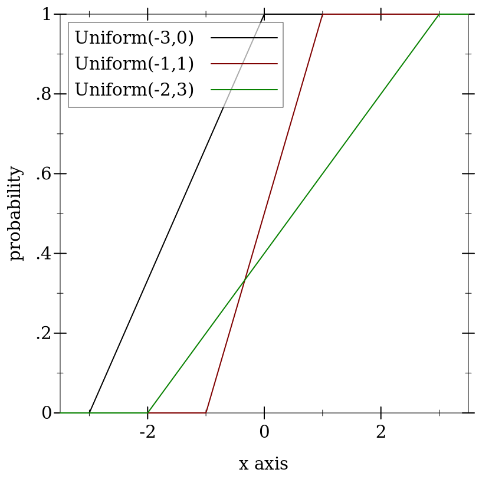
(uniform-dist x x) 对于任何实数 x , 其行为就像一个以 x 为中心的支持有限的 delta 分布。